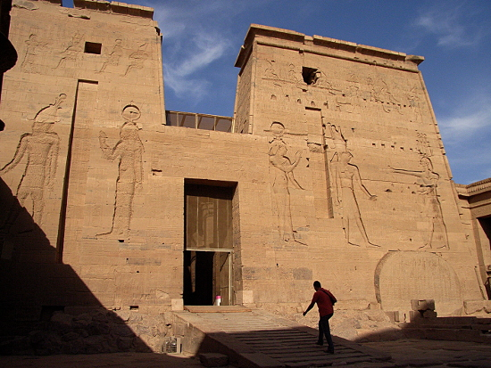
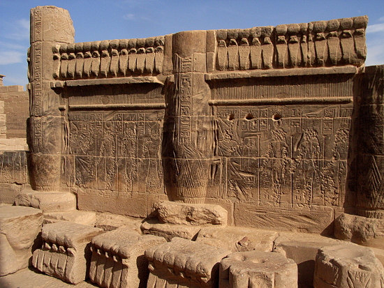
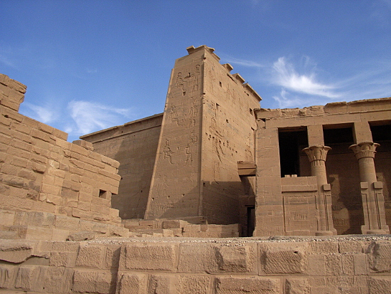
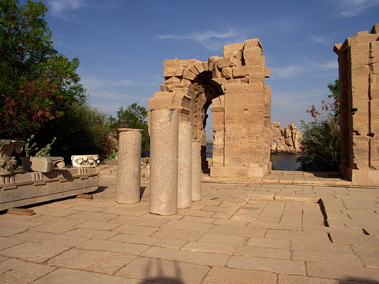
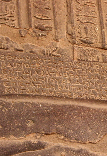
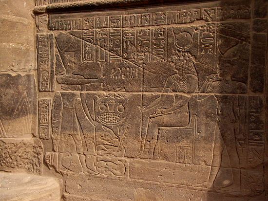
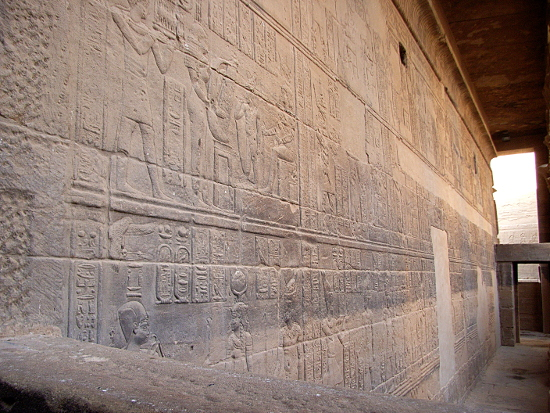

Egypt Trav-E-Log ©
Temple of Isis from Philae
14 Nov 2010, Aswan, Egypt
-------------------------------------------
The Temple of Isis (c.365 BCE) from Philae is part of an ancient Egyptian temple complex from a now submerged island by the name of Philae. It's location, near the Nile's first cataract, was usually flooded by the old (1902) Aswan Dam, so a cooperative UNESCO project moved the entire temple to Agilkia Island before completion of the new Aswan High Dam (c. 1980). It's new home is at a higher elevation on Agilkia Island, between the low and high dams.
-------------------------------------------
View of the second pylon from the inner courtyard, Temple of Isis. |
 |
The lower portion of most walls show water damage from 70-some years of flooding before moving the temple to Agilkia Island. |
 |
View from outside the temple. The second pylon is in center of photo. |
 |
A portion of the courtyard. |
 |
Hieroglyphs and figures on courtyard wall (right).
Hieroglyphs and figures on temple wall. (below-right)
Some areas have significant inscriptions added in Greek, as Egypt came under Greek rule not long after local construction was complete (below).
 |

 |
Question? Contact me at the Juno.com address Dancer2SEAsia.
Life is Good When You Travel! Start planning your next trip!